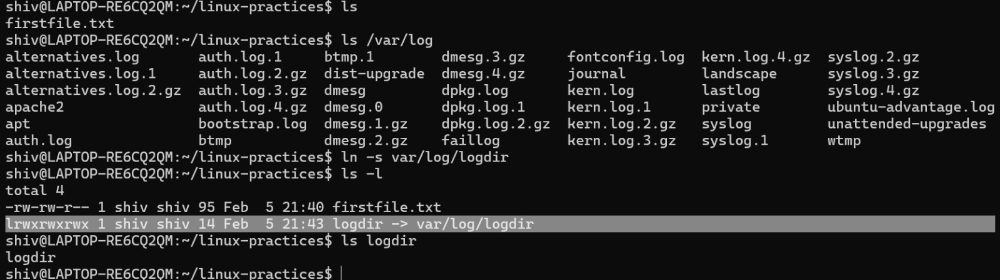

| -r | List all files and directories in reverse order |
| -R | Short list all directories |
| -t | Sorted by modified time, started with the newest file |
| File Type | First Character in File Listing Description |
|---|---|
| Regular file - | Normal files such as text, data, or executable files |
| Directory d | Files that are lists of other files |
| Link l | A shortcut that points to the location of the actual file |
| Special file c | Mechanism used for input and output, such as files in /dev |
| Socket s | A special file that provides inter-process networking protected by the file system's access control |
| Pipe p | A special file that allows processes to communicate with each other without using network socket semantics |
Symbolic links are like desktop shortcuts we use in windows.
Create a soft link for /var/log directory in our current working directory.
